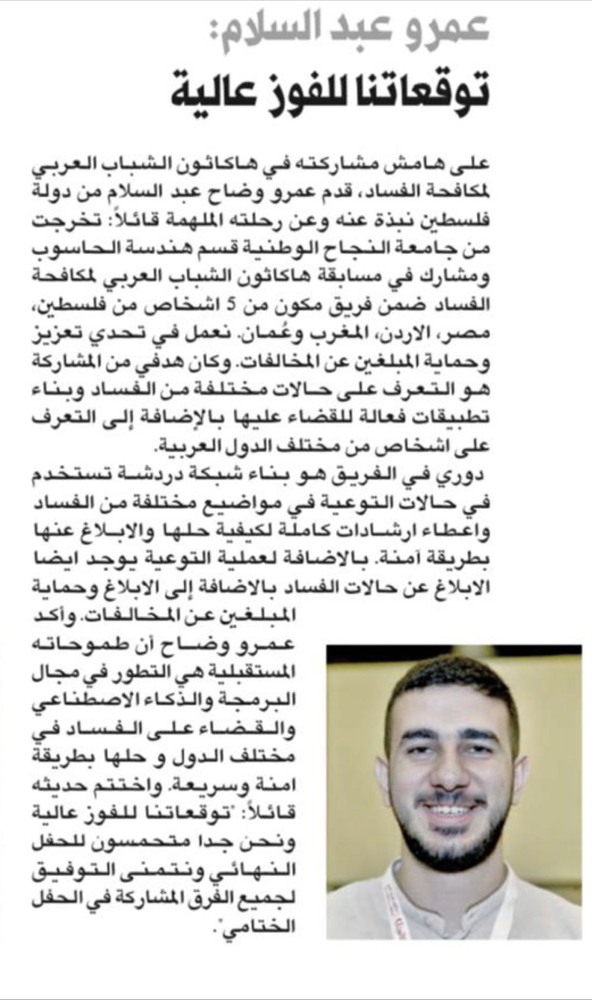
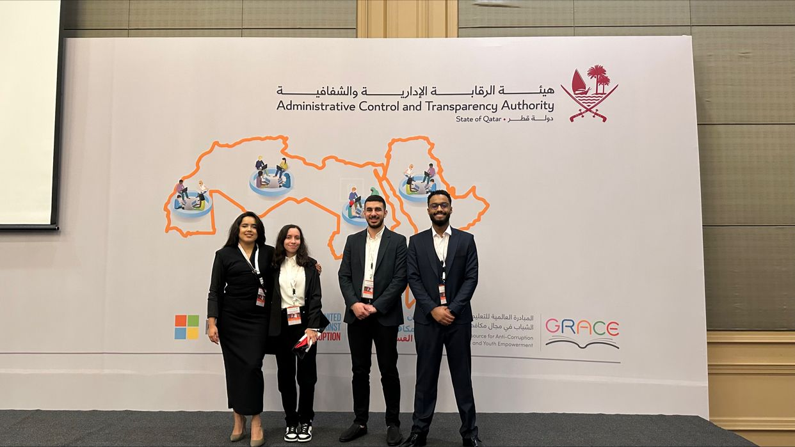
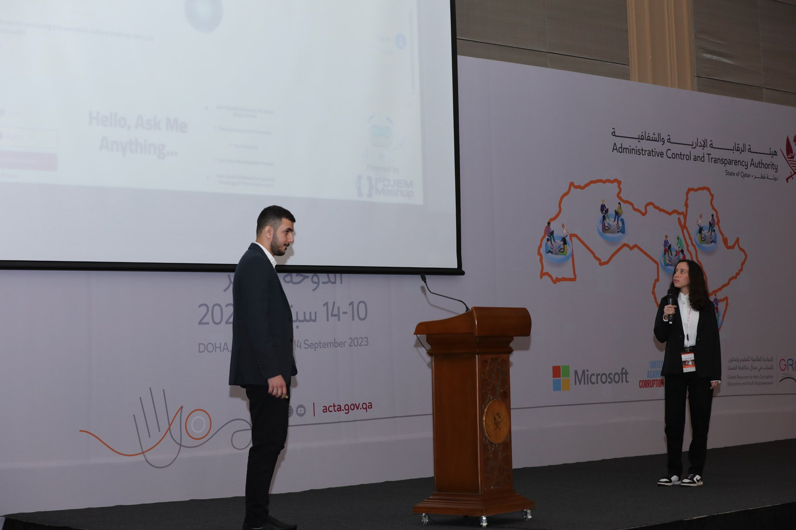
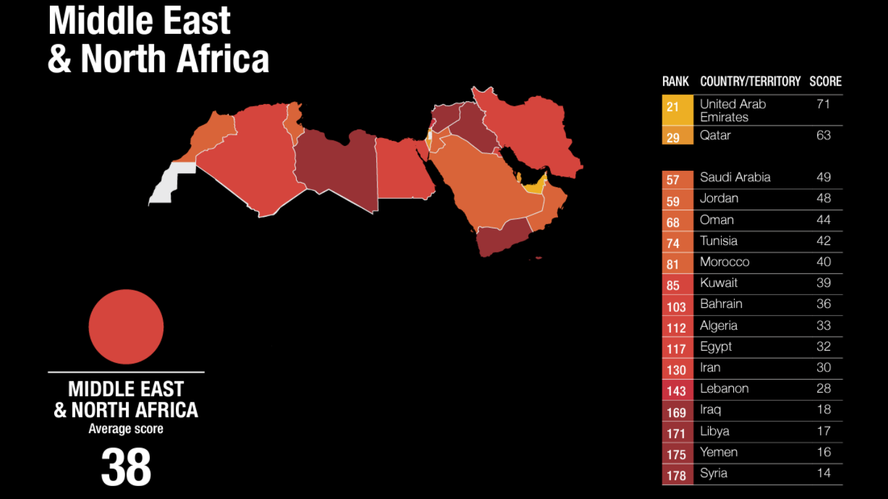
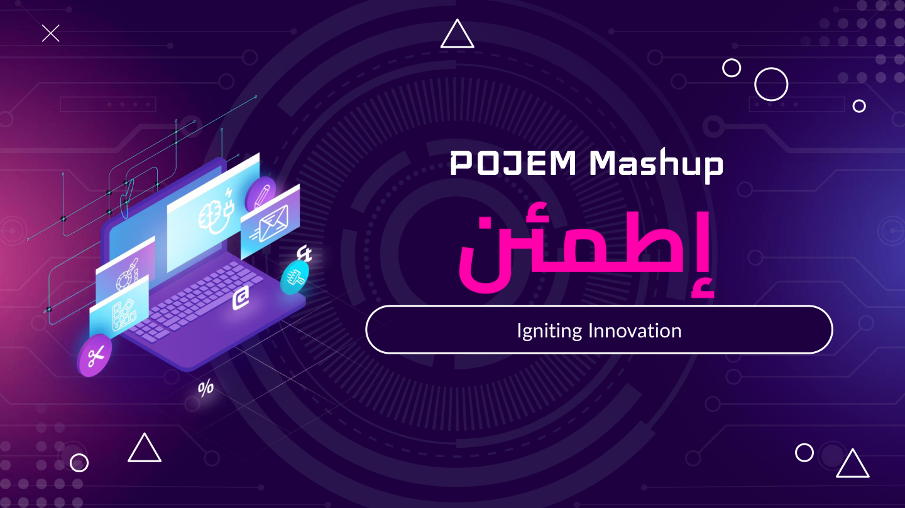
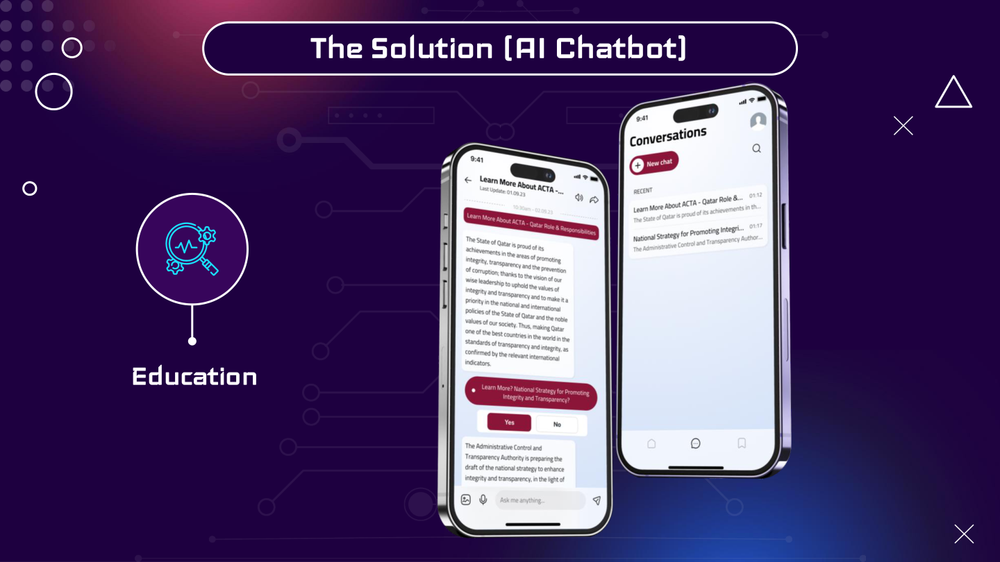
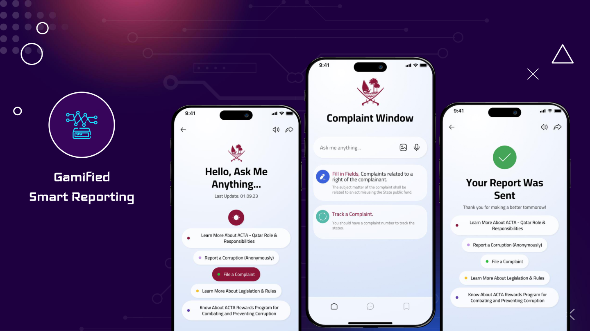
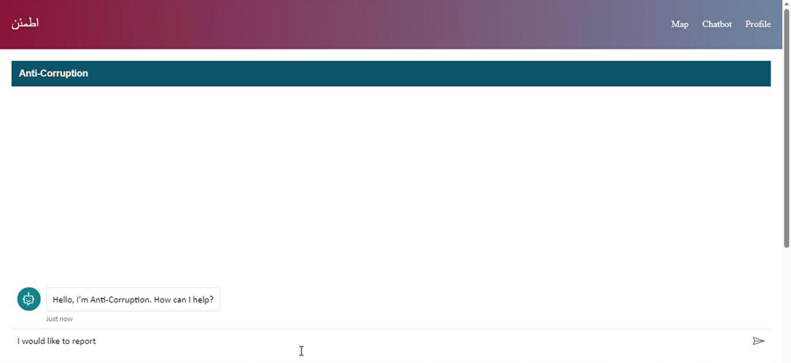
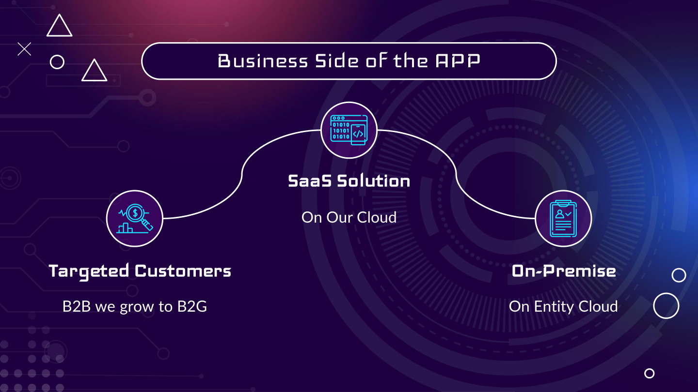
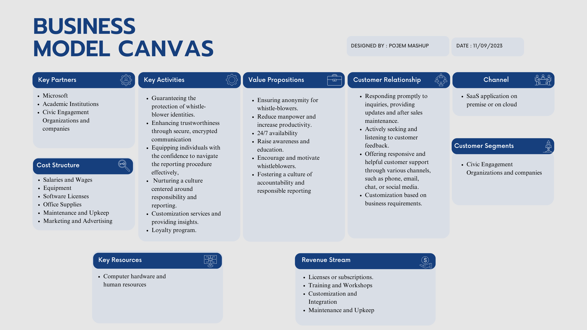

Coding4Integrity Hackathon · Doha, Qatar
Building tech that helps societies fight corruption.
I'm Amr Abdul Salam, a Data Engineer at Harri based in Nablus. From July to September 2023 I joined team POJEM Mashup at the Coding4Integrity hackathon to build اطمئن (Itmi'nan — "Rest Assured"), an Azure-based AI chatbot for anti-corruption reporting.
About Me
Hi, I'm Amr.
I'm a Data Engineer at Harri, based in Nablus. I took part in the Coding4Integrity hackathon in Doha, Qatar, where our team designed a technology solution aimed at helping governments and citizens fight corruption.
This page documents that project — the problem we set out to solve, what we built, and how it was meant to work as a real product, not just a hackathon demo.

The Hackathon
Coding4Integrity
Part of UNODC's GRACE Initiative, "Coding4Integrity" is a youth anti-corruption hackathon series. The 2023 edition brought young coders from 17 Arab countries to Doha, Qatar, to build ICT-based solutions for corruption-related challenges in the region — organized in the margins of the 20th anniversary of the UN Convention Against Corruption (UNCAC).


Our challenge track: Whistle-blowing promotion & protection
Teams picked one of six thematic challenges. We tackled whistle-blowing promotion and protection — building a solution that lets people report corruption while guaranteeing their anonymity and the confidentiality of their information, with a particular focus on protecting women and other groups most vulnerable to retaliation.
Why it matters
Corruption remains one of the biggest obstacles to development in the Arab region. According to Transparency International's Corruption Perceptions Index, the Middle East & North Africa has the lowest average regional score in the world — even strong regional performers like Qatar and the UAE show there's more work to do globally. The hackathon challenged teams to design real solutions, not just raise awareness.

Our Project
اطمئن — "Itmi'nan"
Built by team POJEM Mashup — "Igniting Innovation."
اطمئن is an Azure-based AI chatbot that automates corruption reporting while ensuring user anonymity and data integrity. It gives citizens a safe, guided way to learn about integrity legislation and report corruption, while giving oversight authorities the tools to manage and act on those reports — all built on Azure Cloud services.
The hackathon's stated goal was to advance UN Sustainable Development Goal 16 (Peace, Justice and Strong Institutions) through technology, and اطمئن was our direct answer to that: a tool built specifically to strengthen accountability and access to justice by making it safer to report corruption.

Azure AI Chatbot for Education
An Azure-based conversational assistant that walks citizens through anti-corruption legislation, explains the role and responsibilities of oversight bodies like ACTA, and answers questions about national integrity strategy — in plain language.
Gamified Smart Reporting
A guided complaint window lets anyone report corruption anonymously, file a formal complaint, or track an existing report by its complaint number — with a rewards program designed to encourage people to speak up.
Admin Dashboard
A prioritization dashboard for authority staff: a list of reports and complaints, a corruption heat map, workflow management, and the same AI chat tooling to help triage cases faster.



How we designed it to work
Beyond the demo, we mapped out how اطمئن could reach real users and organizations — from Doha's Coding4Integrity presentation deck.


Get in touch
Let's talk.
Have questions about the project, the hackathon, or want to collaborate on something similar? Reach out.